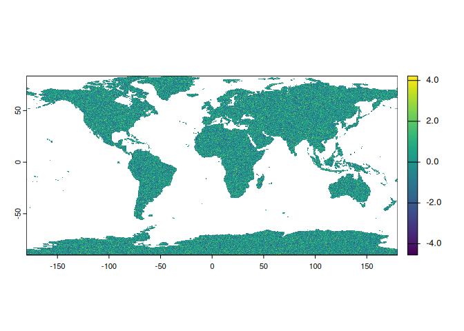
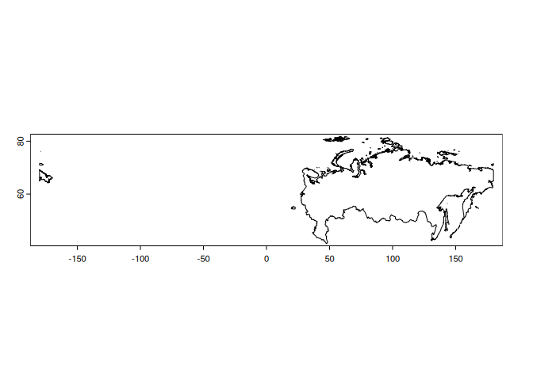
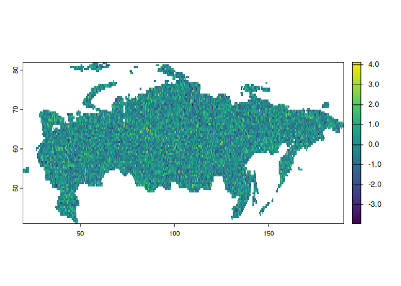

Overview
orbis is an R package that offers a suite of tools for simplifying spatial data analysis.
If you find this project useful, please consider giving it a star!

Installation
You can install orbis using the remotes package:
remotes::install_github("danielvartan/orbis")Usage
orbis is equipped with several functions to help with your analysis, such as:
-
filter_points_on_land: Filters latitude/longitude points that intersects with a givensfgeometry. -
get_brazil_municipality: Get Brazilian municipalities data. -
get_sidra_by_year: Get and aggregate data by year from SIDRA API (to avoid overloading). -
shift_and_rotate: Shift and rotate raster or vector data. -
shift and_crop: Shift, rotate, and crop a raster using a vector. -
wc_to_ascii: Convert WorldClim GeoTIFF files to ASCII raster format.
Example:
raster <-
expand.grid(
seq(-179.75, 179.75, by = 0.5),
seq(-89.75, 89.75, by = 0.5)
) |>
as_tibble() |>
rename(x = Var1, y = Var2) |>
mutate(value = rnorm(259200)) |>
rast(type = "xyz") %>%
`crs<-`("epsg:4326")
world_shape <- world(path = tempdir())
raster <- raster |> crop(world_shape, mask = TRUE)
raster |> plot()

raster |>
shift_and_crop(vector, dx = -45) |>
plot()
Click here to see the full list of functions.
License

orbis code is released under the MIT license. This means you can use, modify, and distribute the code as long as you include the original license in any copies of the software that you distribute.
Contributing

Contributions are welcome, including bug reports. Take a moment to review our Guidelines for Contributing.

You can also support the development of orbis by becoming a sponsor. Click here to make a donation. Please mention orbis in your donation message.